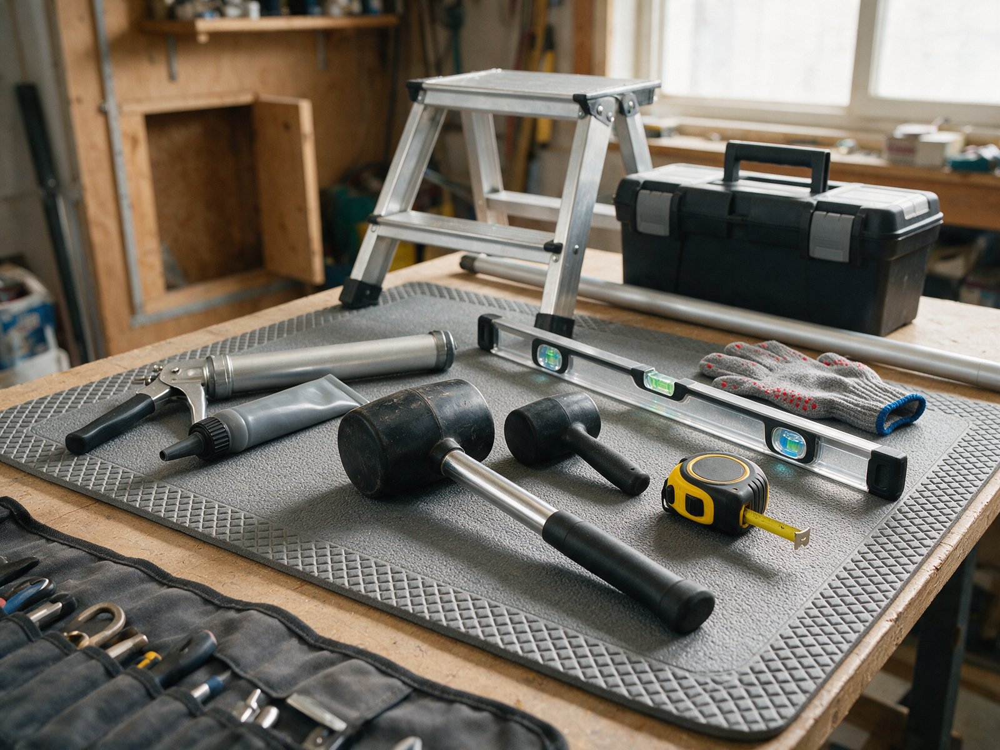
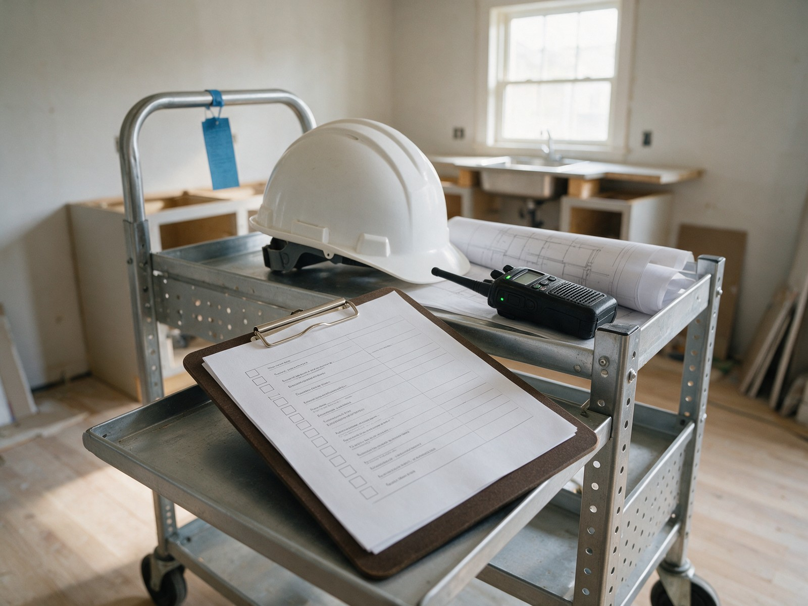

By the Editorial Team | Published: September 2026 | Last Updated: September 2026
When a Residential Project Crosses Into Large-Scale Territory
A large-scale residential project is one where the size and complexity of the installation moves beyond what standard residential process can efficiently manage. This typically happens when the project involves multiple rooms, multiple counter runs, or a large single kitchen with an unusual number of counter pieces. Custom estates, luxury renovations, and comprehensive whole-home remodels frequently fall into this category. The shape of the work is still fundamentally residential (single client, single site, single homeowner as decision-maker), but the volume and coordination requirements approach commercial-scale complexity. This walkthrough covers the specific characteristics of large-scale residential work, how planning changes at this scale, and what homeowners should expect from fabricators handling projects at this size.
The distinction between "large residential" and "commercial multi-unit" matters because the same underlying complexity can be structured differently. Large residential retains the single-client relationship structure; commercial multi-unit involves multiple end-users and typically a developer or property manager as the client. Understanding which category applies shapes the coordination approach.
Typical Characteristics of Large-Scale Residential Projects
Large-scale residential projects share characteristics that distinguish them from standard single-kitchen work.
- Multiple installation zones: kitchen plus bathrooms, laundry rooms, wet bars, butlers pantries, outdoor kitchens, or specialty rooms. Each zone has its own installation requirements.
- High piece count: 15 to 40 or more fabricated pieces across the project.
- Multiple stones sometimes: different rooms may use different stones for aesthetic differentiation.
- Extended fabrication window: fabrication may run for 3 to 6 weeks across staged production for different zones.
- Multiple installation visits: the project typically requires 2 to 4 or more installation visits, one per major zone.
- Coordination with multiple trades: plumbing, electrical, cabinetry, tile, painting, and specialty trades all need to align with the counter schedule.
- Structured documentation: project schedules, room-by-room specifications, and formal milestone confirmations are typically appropriate at this scale.
- Longer overall timeline: 6 to 10 weeks or more from stone selection to final installation completion.
Timeline for Large-Scale Residential Projects
Large-scale residential timelines run 6 to 10 weeks in the standard case, sometimes extending to 12 to 16 weeks for very complex projects.
| Week | Typical activity |
|---|---|
| 0 to 1 | Contract signing, master stone selection, deposit |
| 1 to 2 | Room-by-room design review, per-room specifications finalized |
| 2 to 3 | Precision measurement across all rooms, cabinet installation confirmed |
| 3 to 5 | Slab layout review, fabrication zone 1 (typically kitchen) |
| 4 to 6 | Fabrication zone 2 (typically bathrooms) |
| 5 to 7 | Fabrication zone 3 (specialty rooms if applicable) |
| 6 to 8 | Installation zone 1 (kitchen) |
| 7 to 9 | Installation zone 2 (bathrooms) |
| 8 to 10 | Installation zone 3 (specialty rooms), final walk-through |
The staged approach allows the project to move forward on each zone independently rather than waiting for all rooms to reach the same readiness state before any fabrication begins.
Coordination Discipline at Large-Scale Residential
Coordination requirements grow significantly at this scale because more parties are involved and the sequence dependencies are more complex.
Master Schedule Discipline
Large-scale projects benefit from a master schedule that maps all counter-related activities across the timeline. The schedule tracks stone selection, fabrication start and finish per zone, installation dates per zone, and dependencies on other trades. This master view catches conflicts before they become problems.
Per-Room Specification
Each room typically needs its own specification covering the stone (if different across rooms), the counter geometry, the cutouts and features, the edge profile, and the finish. Room-level specs prevent one zone's decisions from being confused with another's.

Change Management
Changes at this scale often ripple through multiple zones. A change to the kitchen counter timeline can affect when bathroom counters are fabricated (if the fabricator's shop schedule shifts). Change management benefits from written change orders that document what changed, when, and how it affects the master schedule.
Multi-Trade Coordination
Coordination with other trades scales up. The plumber may need to work in multiple bathrooms across multiple days; the tile contractor may need to align backsplashes across different rooms. Someone needs to hold the master view of who is on-site when.
Fabricator Requirements for Large-Scale Residential
Not every fabricator is well-suited for large-scale residential work. The fabricator needs specific capabilities:
- Shop capacity for extended production: the shop needs to be able to produce pieces for the project across multiple weeks without competing capacity conflicts.
- Documentation discipline: the fabricator needs the process to produce and maintain project schedules, per-room specifications, and change orders.
- Multi-crew installation: the fabricator needs multiple installation crews or the ability to spread installation across multiple days.
- Project management staff: larger residential projects benefit from dedicated project managers who hold the master view rather than the same shop staff handling coordination as a side task.
- Portfolio of similar projects: the fabricator should have recent large residential projects to reference.
Fabricators who primarily handle standard residential work sometimes accept large residential projects but struggle with the coordination overhead. The result is often extended timelines and communication gaps that frustrate the homeowner.
Common Pitfalls in Large-Scale Residential
Some pitfalls come up repeatedly on large-scale residential projects.
Coordination gaps between rooms: the kitchen team knows what is happening in the kitchen; the bathroom team knows what is happening in the bathrooms. Without someone holding the master view, gaps develop in the space between zones.
Scope creep: the homeowner sees the project moving forward and adds counters that were not in the original scope. Reputable fabricators handle scope additions with change orders; less-formal fabricators absorb them and lose money or delay the project.
Material availability across zones: committing to a specific stone for the whole project can fail if the fabricator runs short of that stone partway through. Confirming quantities at contract signing prevents this.

Installation sequence conflicts: installing bathrooms before the kitchen can create logistical problems (crews walking through the finished kitchen carrying stone pieces). Installation sequence needs deliberate planning.
Extended timeline creates coordination fatigue: homeowners engaged with the project for 10 or more weeks sometimes lose track of details as decision fatigue accumulates. Structured check-ins prevent this.
Homeowner Engagement at Large-Scale Residential
Homeowner engagement requirements scale with the project. A large residential project may require 20 to 40 hours of homeowner engagement across the timeline, distributed across selection, review, coordination, and installation days.
The engagement pattern is different from standard residential. Instead of concentrated engagement at a few decision points, large projects have distributed engagement across many small decisions and coordination touchpoints. Homeowners who prepare for this cadence do well; homeowners who expect a hand-off-and-wait experience typically get frustrated.
Cost Structure for Large-Scale Residential
Cost structures at large residential scale are typically hybrid: per-square-foot pricing for most work with per-project fixed costs (project management, coordination overhead) built into the contract. Very large projects may include a project management fee separate from the fabrication and installation costs.
Total costs at this scale can reach many multiples of standard residential projects, both because more counter is being installed and because the coordination premium is real. Understanding the coordination component prevents surprise at seemingly high proposal totals.
Frequently Asked Questions
What size project counts as large-scale residential?
Projects with 15 or more fabricated pieces, or projects covering multiple rooms with substantial counter area in each. Very large single kitchens can also count if the piece count and coordination overhead are high.
Does large-scale residential cost less per square foot than smaller projects?
Sometimes. Larger projects can amortize fixed costs (delivery, setup, minimum charges) over more area, which reduces per-square-foot pricing. But the coordination premium at large scale offsets some of that. Actual per-square-foot pricing varies more with fabrication complexity than with pure area.
How does the homeowner know a fabricator can handle large residential?
By asking about specific experience with similar-scale projects, checking references, and evaluating whether the fabricator has dedicated project management capacity for larger projects. Fabricators who cannot describe their large-residential process typically have not developed one.
Should the whole project use the same stone or different stones?
Both approaches work. Same stone throughout creates unity; different stones per room create differentiation. The choice depends on the design intent. Practical considerations include material availability at scale and the design coordination across rooms.
What happens if the fabricator gets overloaded partway through the project?
The project slows. Reputable fabricators communicate proactively about capacity issues and re-schedule to accommodate them. Less-reputable fabricators quietly extend timelines without discussion. Homeowners should ask about the fabricator's capacity headroom before committing.
Can the project be paused and resumed?
Sometimes, at cost. Pausing an in-progress fabrication is expensive because the shop capacity was reserved. Resuming after a pause typically requires re-slotting into the fabricator's schedule. Better to plan for continuous progress than to pause.
How does the homeowner know if all the rooms will be coordinated?
By reviewing the master schedule with the fabricator, understanding who holds coordination responsibility, and confirming that specific handoffs are planned. Fabricators who cannot show a master view of the project typically have not developed one.
Does large-scale residential work require a general contractor?
Not always, but often. Many large residential projects involve enough coordination that a GC provides value. Homeowners managing their own large projects need to hold significant coordination responsibility themselves. Both approaches work with the right execution.